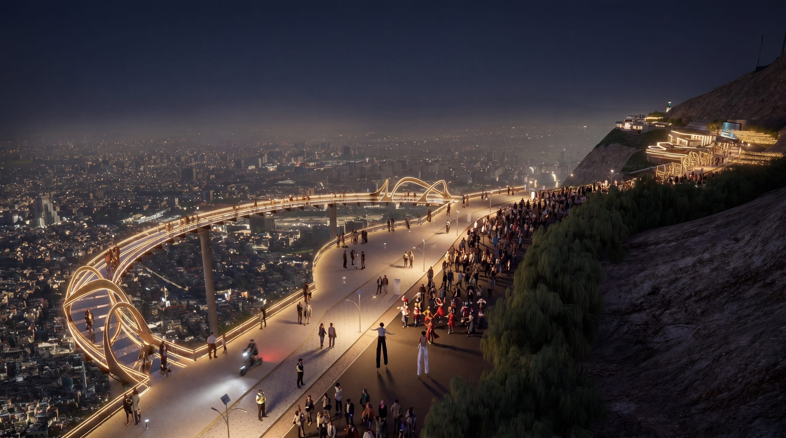

دمشق كما لم ترها من قبل
من سفوح جبل قاسيون، وجهة سياحية وثقافية جديدة تطلّ على العاصمة بأكملها.
زيارة موقع رحلة قاسيونمحافظة دمشق تفتح أبواب العاصمة أمام الاستثمار، بمحفظة من المشاريع التنموية التي تعيد رسم ملامح المدينة وتصنع شراكات تدوم
الحقائب الاستثمارية
01 / 15
لا توجد حقائب استثمارية متاحة حالياً. تابعونا للاطلاع على الحقائب القادمة.